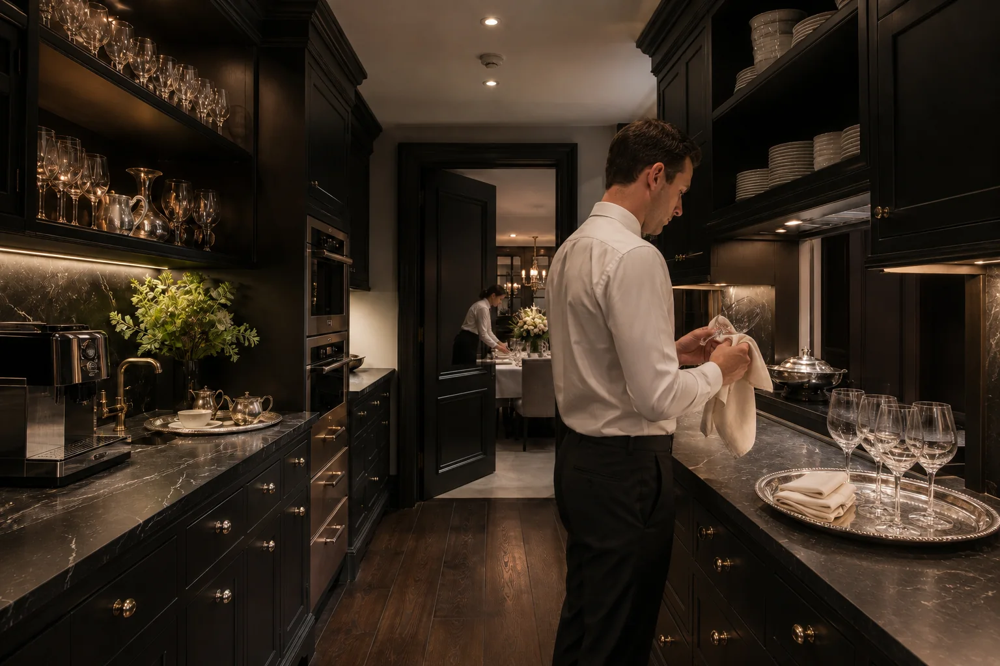
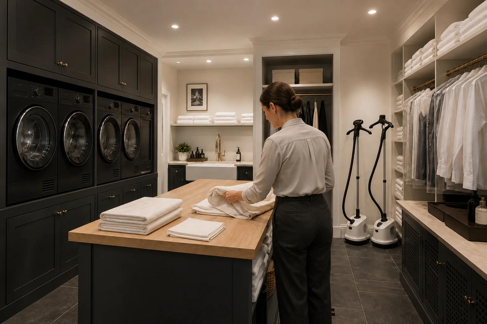

The house at work
Kitchen, front of house & the rooms behind the scenes
Quiet moments behind a house full of guests: plates finished, glasses polished and fresh linen ready for the next room.

Before dessert
Lemon tart and raspberries are plated at the event kitchen’s stainless prep island, ready for service.
Explore this room →

Before dinner
Glasses are polished and a tray assembled in the raised-ground butler’s pantry, close to the dining room.
Explore this room →

Between stays
Towels and table linen are folded at the laundry worktable, with garment care kept in its own service space.
Explore this room →Illustrated moments in the working house. Meet the household team →